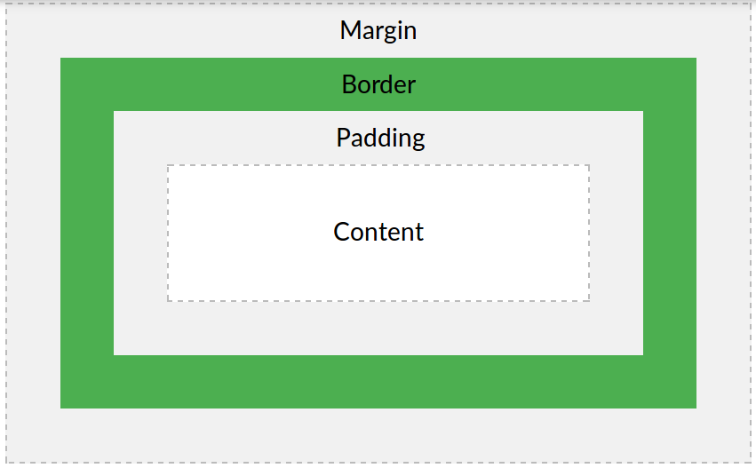

What Can CSS Do?
Demonstrating the Box Model
The CSS box model is essentially a box that wraps around every HTML element. It consists of: borders, padding, margins, and the actual content.
Width and Height of an Element
In order to set the width and height of an element correctly in all browsers, you need to know how the box model works.
Important: When you set the width and height properties of an element with CSS, you just set the width and height of the content area. To calculate the full size of an element, you must also add padding, borders and margins.(not in Firefox)
Assume we want to style a <div> element to have a total width of 350px:
Calculate the total width:

Here is the math:
The total width of an element should be calculated like this:
Total element width = width + left padding + right padding + left border + right border + left margin + right margin
The total height of an element should be calculated like this:
Total element height = height + top padding + bottom padding + top border + bottom border + top margin + bottom margin
Note for old IE: Internet Explorer 8 and earlier versions, include padding and border in the width property. To fix this problem, add a <!DOCTYPE html> to the HTML page.
Note for FIREFOX: width property seems to be: width=content+2*padding+2*border